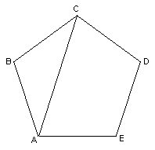

Pentagon/Chapter 7
Looking at a regular pentagon:
AC is a
diagonal of the regular pentagon. Draw in all the diagonals of the pentagon.
Label the points of intersections.
What do you see?
How many different size triangles are formed?
How many different size angles are formed?
Knowing that the sum of the angles of a triangle is 180 degrees, figure out the
number of degrees in each of the angles in the diagram.
How many different length segments are formed?
Measure all the lengths of the different segments (in mm.)
Find the ratio of bigger to smaller segments. What do you notice?
Can you make a sequence of pentagonal numbers?
See answer section for Chapter 7
See Cristobal Vila's beautiful short movie "Nature by Numbers" at http://www.etereaestudios.com/docs_html/nbyn_htm/intro.htm
See Xah Lee's site on curves- especially the equiangular spiral
See also Golden Triangle, Powers of Phi, Sunflower head , and The Golden Angle on the MAP
Geoffrey graphs the ratios of the Fibonacci numbers and writes a program to get the infinite sequence which has a limit.
Tara writes a story "A Quest For The Sacred Golden Pineapple, Pine Cone and Artichoke"
Jamie an 8th grader, solved the quadratic equation x2 - x - 1 = 0, by iteration to get Phi, and he and Don wrote a program to do this on a TI-84 Plus.
Comparing the spirals of fibonacci numbers, the Nautilus shell, and The equal-tempered Musical scale
See also Dr. Ron Knott's great webite for much more on the Fibonacci numbers.